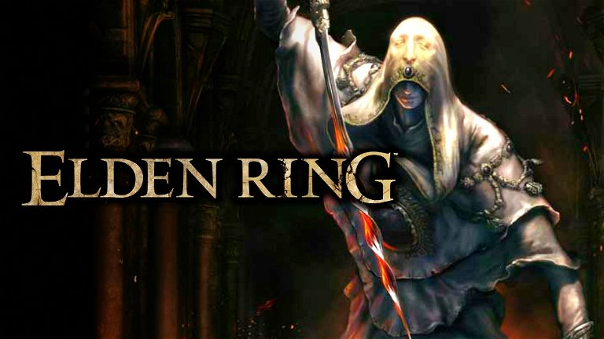

Home Page
The game is set in the vast and mysterious world of Middle-earth, known as "The Golden Ring". In this world, the Great Tree, known as the Elden Ring, has been destroyed, plunging the world into chaos. The fragments of the Elden Ring have given rise to the creation of powerful beings and kingdoms. The player character is the "Tarnished", an exile who has lost his memories and is summoned by a mysterious figure named Melina to embark on a quest to restore the Elden Ring and unlock the secrets of this world. Throughout the story, the player encounters diverse characters, faces formidable enemies and explores the dark corners of this vast fantasy universe. Elden Ring stands out for its focus on exploration, challenging combat and lore-rich narrative, elements that are characteristic of FromSoftware's games. Translated with www.DeepL.com/Translator (free version)
